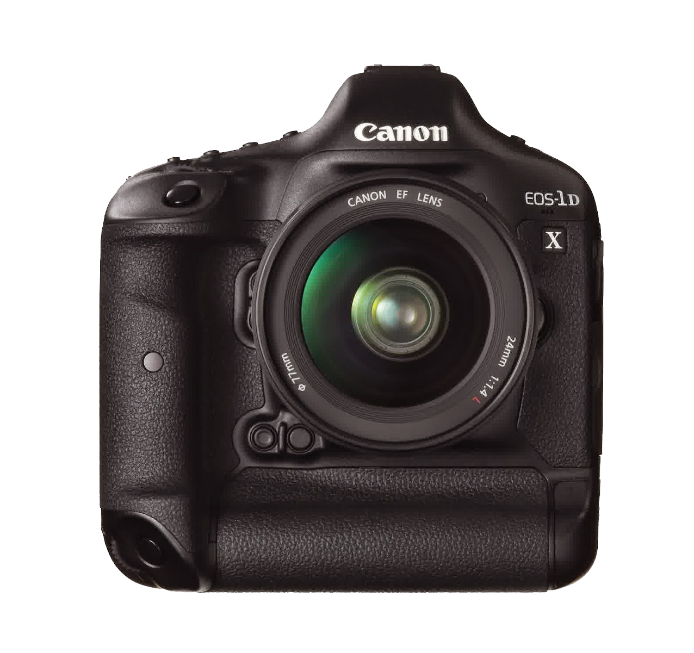
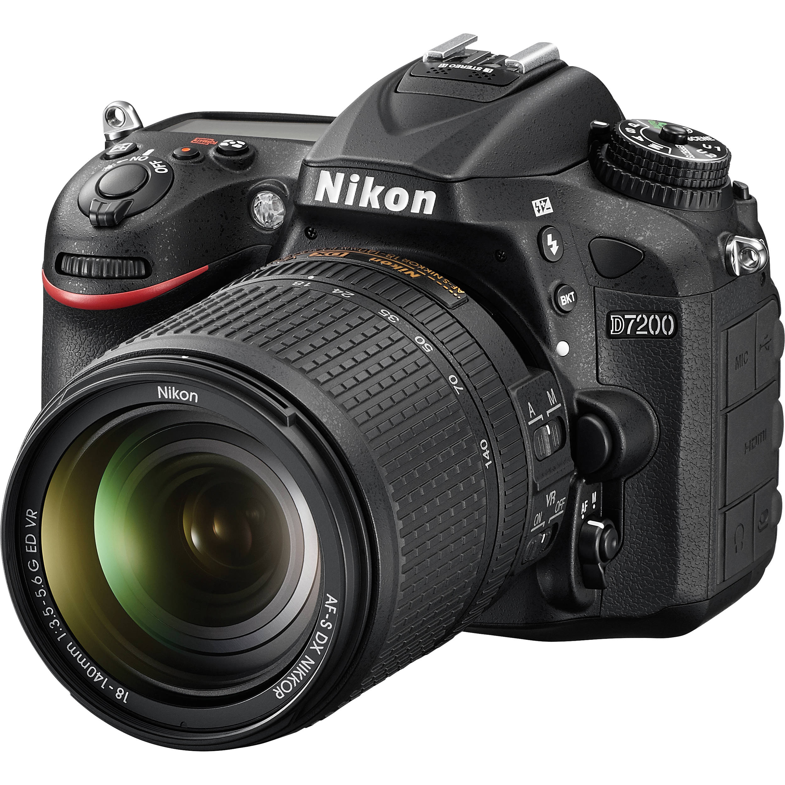

Spesifikasi Kamera Eos 1 D
Juni 04, 2019 Views: 3,466,987EOS 1D X merupakan kamera DSLR andalan dari perusahaan kamera ternama yaitu CANON . Meluncurnya EOS 1D X merupakan penerus dari canon Seri 1D yang sebelumnya telah hadir.
Selengkapnya

DSLR untuk Fotografer, Masih Perlu?
Jan 18, 2019 Views: 5,009,123Om, mau nanya nih. Pada kamera dslr, manakah derajat yang lebih penting antara kualitas gambar dengan kinerja, kualitas gambar dengan harga, kinerja dengan harga? (dodi sitorus)
Selengkapnya
5 Fotografer Muda yang Jadi Inspirasi Mode di 2018
Jan 09, 2019 Views: 5,009,123Jakarta, Photo.net -- Siapa mengira, sejumlah foto yang populer dan menempel di ingatan sepanjang 2017 lalu ternyata berasal dari fotografer muda generasi millennial?
Selengkapnya